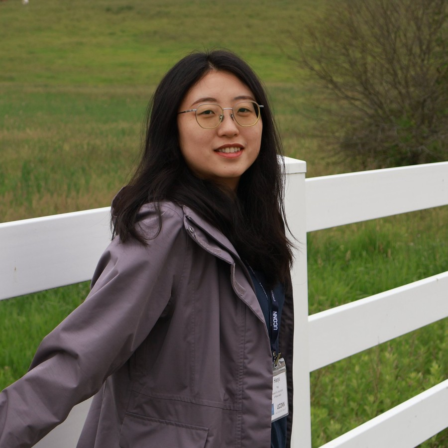

Tail likelihood ratio method for large-scale causal mediation hypothesis testing
Joint Statistical Meetings — Portland, USA
Postdoctoral Research Fellow building statistical methods for causal inference and large-scale association studies — integrating AI generative models with rigorous statistical frameworks to uncover biomarkers and disease mechanisms.

I am a Postdoctoral Research Fellow in the Department of Biostatistics at the Harvard T.H. Chan School of Public Health, working with Professor Xihong Lin.
My research interests build statistical methodology for large-scale biomedical data: causal mediation analysis that integrates exposure, genomic, and phenotype information; proteomic and genome-wide association studies; and the design of randomized and networked experiments. I am drawn to problems where a careful statistical idea makes a real biological or economic question answerable.
Before Harvard, I earned my Ph.D. in Statistics at Renmin University of China.
My research focuses on developing innovative biostatistical and machine learning methodologies to address complex challenges in public health and multi-omics. Specifically, my work spans causal inference and complex trial designs (including adaptive randomization and network interference), AI-empowered large-scale association studies, and high-dimensional causal mediation analysis.
My overarching goal is to translate methodological innovation into actionable insights that advance precision medicine and inform public health policy. Toward that end, I am blending cutting-edge AI generative modeling with rigorous causal inference to understand disease mechanisms in large-scale cohorts.
Mediation testing that uses the entire cohort — generative imputation for unmeasured molecular mediators, folded into an augmented-IPW test with calibrated uncertainty and valid error control.
Domain-adapted generative models plus transfer learning, so causal pathways found in one biobank stay valid when carried to another across heterogeneous multi-omics data.
A unified framework joining synthetic GWAS and synthetic mediation — AI-enhanced polygenic scores, Mendelian randomization, and adaptive trial designs that close the loop to precision medicine.